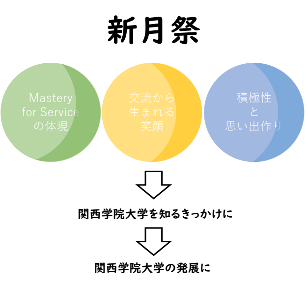

第一回企画説明・申請(三田)
新月祭2020基調
全ての物事の始りにはきっかけが存在します。満月は新月から始まり、 月は自らを光放つのではなく、太陽のひかりをきっかけに、暗い夜を照らします。 そして、世の中を明るくするきっかけとなるのです。 それならば関西学院大学を知るきっかけがこの新月祭でありますように。 私たちの活動が、そのきっかけをより濃く、確実なものとします。
関西学院大学の学生が新月祭を通じて、学内、学外の人と関わることで、 弊校のスクールモットーである「Mastery for Service 奉仕のための練達」を体現することに繋がります。 地域の人々を含めた、交流によって生まれる笑顔があふれる場所。 形あるものに参加することで高められる積極性と大学生活における貴重な関学生同士の絆や思い出作り。 これらを作り出せるきっかけが新月祭になるということを私たちは願っており、それを作り出すことが私たちの役目であると確信しています。
以上より、新月祭2020を運営することで、大学祭によって生まれる全てのきっかけによって、さらなる関学の発展へ繋げます。
関西学院大学新月祭2020実行委員会 
学生企画規則
関西学院大学新月祭 2020 大学祭実行委員会学生企画規則
第 1 章 総則
第 1 条 (趣旨)
関西学院大学新月祭 2020 大学祭実行委員会学生企画規則(以下、規則)は、関西学院大学新月祭 2020(以下、新月祭 2020)において学生企画を安全且つ円滑に行うために定める学生企画(以下、企画)参加団体の遵守事項である。第 2 条 (定義)
新月祭 2020 において関西学院大学生(以下、関学生)が行う企画を学生企画とする。関西学院大学新月祭 2020 大学祭実行委員会(以下、実行委)が指定する模擬店出店可能場所で食品を販売する企画を模擬店企画とする。実行委が指定する一般企画可能場所で行うそれ以外を一般企画と称する。第 3 条 (適用範囲)
本規則は、本企画の参加資格及び条件を満たし、本年度において本企画への参加意思のある団体に適用される。第 4 条 (目的)
本企画の目的は、『関西学院大学新月祭 2020 大学祭実行委員会基調』(以下、基調)を達成し、新月祭2020 を通して関学の発展に貢献することである。第 2 章 参加資格及び条件
第 5 条 (本企画の統括)
1. 本企画は実行委によって運営、統括される。2. 一般企画参加団体は、実行委運営局企画部によって統括される。
3. 模擬店企画参加団体は、実行委運営局模擬店部によって統括される。
第 6 条 (参加資格)
1．関学生によって構成される団体が、本企画への参加資格を有する。2. 関学生によって構成される団体とは、実行委の指定する団体の責任者が関学生であることを指す。
3. 関西学院大学大学院生は実行委の指定する責任者には該当しない。
第 7 条 (団体の参加条件)
1. 本企画への参加は、基調への賛同を必要とする。2. 本企画の参加団体は、団体内での責任体制を明確化するために実行委の指定する責任者の設立を必要とする。
3. 上項で設立された責任者は、実行委が行う本企画に関しての説明会に出席し、各種申請を期日内に行う必要がある。また、適切な手順で必要な手続きを行わなければならない。
4. 本企画の参加団体は、実行委が説明会において配布する資料及び、実行委が行う諸注意、指示を遵守する義務がある。
5. 模擬店企画参加団体は、新月祭 2020 の運営資金の一部を負担しなければならない。
第 8 条 (企画参加団体間の平等性)
実行委は、本企画を行う上で企画参加団体間の平等を期するために、折衝や抽選を行う。第 9 条 (参加団体の負う責任)
1. 本企画の参加団体は、企画の実施に伴う全ての責任を負わなければならない。2. 本企画の参加団体は、企画場所の防犯及び、防災に努める。なお、万が一企画場所において盗難や事故等が生じた場合、参加団体が全ての責任を負わなければならない。
3. 本企画の参加団体は、本企画によって生じた損害、紛失、違法行為等による賠償責任及び他団体との間で生じた問題に関する全ての責任を、新月祭 2020 期間中、期間外を問わず負わなければならない。
第 3 章 学外との関わり
第 10 条 (学外との関わり)
1. 本企画の参加団体は、主体性が損なわれない限り、学外と関わることを認める。2. 上項における主体性とは、本企画の参加団体自らが立案・準備・運営を含む、企画の実施に伴う全ての責任を負うことである。
第 11 条 (学外と関わる手順)
学外と関わる場合は、実行委の指定する手順で手続きを行わなければならない。第 4 章 広報活動
第 12 条 (配布物及び掲示物の使用条件)
1. 本企画に関する情報を記載した配布物及び掲示物は、事前に実行委に申請した上で使用しなければならない。2. 本企画に関する情報を記載した配布物及び掲示物は、指定された場所以外に使用してはならない。
第 13 条 (インターネット上の情報)
インターネット上に本企画に関する情報を掲載する場合、企画参加団体はその情報に関する全ての責任を負わなければならない。第 14 条 (大学祭期間外情宣)
本企画の参加団体は、本企画以外に関した広報活動に全ての責任を負わなければならない。第 5 章 学生企画における金銭のやり取り
第 15 条 (金銭のやり取りについて)
1. 一般企画において、事前に実行委への申請無しに金銭のやり取りを行ってはならない。また、企画可能場所以外での金銭のやり取りを行ってはならない。2. 模擬店企画において、店頭以外で金銭のやり取りを行う場合は、食券を介さなければならない。
3. 上項において、模擬店企画参加団体の使用する食券は実行委に事前申請しなければならない。
4. 食券購入者が模擬店企画参加団体に対して返金を求めた場合、団体は実行委が指定した時間内で、これに応じなければならない。
5. 本企画において不当な金銭のやり取りは一切禁止する。
第 16 条 (一般企画援助金)
一般企画において、金銭のやり取りを行う団体又は企画の実施に伴い協賛を得る団体は、『一般企画援助金制度』に申請することができない。第 17 条 (金銭問題に関する責任)
本企画の参加団体は、当団体に関わる金銭問題が発生した場合、その問題の全ての責任を負わなければならない。第 6 章 資材及び機材の貸し出し
第 18 条 (資材及び機材)
1. 実行委が統括する資材及び機材は、企画参加団体に貸出を行う。2. 実行委が統括する資材及び機材の申請、貸出、運搬、使用等に関しては、実行委の指定した規定に従わなければならない。
3. 実行委が統括する資材及び機材を、本企画の参加団体間で貸し借りすることを禁止する。
第 19 条 (当日の追加申請)
新月祭 2020 当日の資材及び機材の追加申請は原則受け付けない。第 20 条 (資材及び機材に関する責任)
本企画の参加団体は、実行委が統括する資材及び機材を借用してから返却するまで、その資材及び機材に関する全ての責任を負わなければならない。第 7 章 その他遵守事項及び対処
第 21 条 (遵守事項)
本企画の参加団体は法律、条例、学則及び本規則等を遵守しなければならない。1. 本企画の参加団体は、大学の所有物を実行委への申請無しに使用してはならない。
2. 本企画の参加団体は、著作権や商標権等、他者の権利を侵してはならない。
3. 本企画の参加団体は、公序良俗に反する行為を行なってはならない。
4. 本企画の参加団体は、差別的表現及び思想の強要とみなされる不適切な表現等を行ってはならない。
第 22 条 (酒類.喫煙)
1. 学内への酒類の持ち込み及び酒気を帯びた状態での学内への立ち入りを一切禁止する。2. 喫煙所以外での喫煙は学則で禁止されているため、全面禁止とする。
第 23 条 (改善の要求)
1． 実行委は本企画の参加団体が本規則に反すると実行委が判断した場合、本企画の参加団体に対し改善を要求する。また、改善が見られない場合、実行委が企画の中止や停止等の判断を下す。2． 本規則に定めたことでなくとも、実行委が新月祭 2020 の安全且つ円滑な運営に支障を来たす状況であると判断した場合、改善の要求及びそれに伴う企画の中止や停止の判断を行う場合がある。
第 24 条 (口頭による決定事項)
実行委と本企画の参加団体間の口頭による決定事項は、その効力を持たない場合がある。文責: 関西学院大学新月祭 2020 大学祭実行委員会
賛同・同意する
事前企画申請
LINE Official Account登録
以上で企画事前申請は終了です。申請ありがとうございました。以降の説明会・申請に関しましては友達追加していただきました三田運営局企画部LINE Official Accountよりご連絡差し上げますのでしばらくお待ちくださいませ。